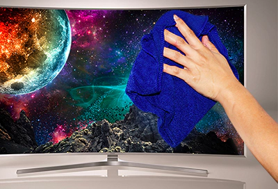

What Dust can do
Over time dust will keep on getting in your computer case. The build-up of dust can (and surely does) impact your computer’s performance for two main reasons: it causes the components of your computer to retain heat and it makes it more difficult for the internal fans to dissipate heat from the system, thereby decreasing the efficiency of the entire system. Fortunately, computer cases have a huge lid that you can open to reach the inside of the machine. Some cases can be opened either with a button on the case or you might have to use a screwdriver. After you open the case, I recommend you use a vaccum cleaner to suck out any fur and dust that's in the case before the machine gets to hot.
Cleaning the Monitor
Even if you try to keep your monitor’s screen free of fingerprints and dust, chances are it will eventually become full of smudges. Therefore, you should clean your monitor every once in a while so you can clearly see everything on the screen when working or gaming. There are a few things to keep in mind when caring for your monitor to ensure it looks its best and that you don't accidentally damage it.
Caution: Because your monitor’s screen is fragile, you should avoid using certain cleaning products. Do not spray water or any kind of detergent onto it. Do not apply window cleaners, soaps, wax, or anything containing alcohol, solvents, or ammonia. Using abrasive pads, paper towels, or cloth towels can scratch and damage the screen.
To clean your monitor, we recommend only using a soft microfiber cleaning cloth and distilled or still water. Other types of water can contain minerals that may leave a residue on the screen’s surface. When you are ready, use these guidelines to clean your monitor:
- Turn off the monitor and the computer, and then disconnect the power cables. Make sure the monitor has cooled down before going to the next step.
- Using a clean microfiber cloth, gently wipe the monitor’s screen to remove dust and fingerprints. Do not press on the screen while cleaning. You can also use compressed air to remove dust from the screen.
- Dampen the cloth with a small amount of distilled water. If there is a touch stain (such as food) on the monitor, you can also try using a mixture of 50 percent distilled water and 50 percent white vinegar. Make sure you wring out any excess liquid from the cloth before using it.
- Gently wipe the monitor with the dampened microfiber cloth. Do not press on the screen while cleaning.
- When you are finished, allow the monitor to dry and then reconnect the power cables.
Internet safety
Online gaming is great fun but it does bring together large numbers of online strangers, most of whom want just to play but some can pose a threat. Here are our 10 top tips for staying safe when playing on consoles and PCs.
- Avoid downloading unofficial cheats from unknown sources. These are unlikely to work and will more likely contain viruses or other forms of malware. Likewise only download official upgrades and levels.
- Never give away your email address to unauthorised sources as you may receive spam or emails that contain malware.
- Choose a username that is nothing like your real name. Never put a clue to your date of birth in a username or add personal details to your online profile or avatar.
- Use a strong password consisting of both characters and letters.
- Delete all personal information from consoles and PCs when you dispose of them or pass them onto others.
- On a PC, ensure antivirus software is installed and keep it fully up-to-date.
- Beware of who you talk to and what you say to other game players. Treat them as game players and never reveal any personal information such as your full name, email, schools or phone numbers etc.
- Report any abuse or bullying to games software makers through their reporting procedures. Players can get very competitive – sometime this spills over into abuse, while others simply use online gaming to abuse others. See if the game can block abusive players directly
- If you are a parent never let your children meet up with people they have “met” in multiplayer games.
- Be wary of “virus alerts” unless they come from the antivirus software you installed. They could be false alerts designed to trick you into downloading software you don’t need.